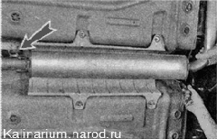

Подвеска системы выпуска отработавших газов - замена подушек
Подушки подвески основного и дополнительного глушителей взаимозаменяемы. Заменять их можно в произвольном порядке.
Для выполнения работы потребуется смотровая канава или эстакада.
Последовательность выполнения
1. Подготавливаем автомобиль к выполнению работы.
Внимание!
Во избежание получения ожогов работу следует выполнять после остывания деталей системы выпуска отработавших газов до безопасной температуры.
2. Отсоединяем подушку задней подвески основного глушителя от кронштейна.

3. Пассатижами отгибаем загнутые концы кронштейна кузова.
4. Поддев отверткой снимаем подушку подвески глушителя с кронштейна.
5. Новую подушку подвески устанавливаем в обратной последовательности. Отогнутый усик кронштейна загибаем, фиксируя подушку от соскальзывания.
6. Снимаем подушку передней подвески основного глушителя (сначала с кронштейна глушителя, а затем с кронштейна кузова).
7. Аналогично заменяем две другие подушки подвески дополнительного глушителя.
